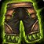
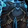
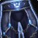

Leggings of Eternity
Leggings of EternityLeggings of Eternity221 armor, 45 stamina, 38 intellect, 41 spell damage, 121 healing powerSockets blue, blue, blue · Socket bonus 9 healing power, 3 spell damageDrops from Archimonde, Mount Hyjal
221 armor, 45 stamina, 38 intellect, 41 spell damage, 121 healing power
Sockets blue, blue, blue · Socket bonus 9 healing power, 3 spell damage
Drops from Archimonde, Mount Hyjal
What influencers say
Showing 4 of 5 captured remarks, widest reach first, with every view
represented
Zatar (Classic Wow Builds)
Zatar (Classic Wow Builds) · 69:46
58k views
Speaks well of it
Zatar says resto druids want these legs rather than tier legs, since the
tier four-set bonus is useless to them and they only take head, chest
and shoulders.
Zatar (Classic Wow Builds)
Zatar (Classic Wow Builds) · 72:32
58k views
Speaks well of it
Zatar calls them best in slot for priest and druid with priest taking
priority because druids have a leather alternative, and says they are
strong enough that holy paladins and resto shamans without tier bonuses
can want them too.
NOHITJEROME
NOHITJEROME · 18:36
5k views
It depends
NOHITJEROME runs these legs and calls the race between them and Kilt of
Immortal Nature nearly even, saying he would take these if parsing as
hard as possible but would be happy with either, and warns against
Thunderheart Leggings.
Knot
Knot · 29:24
4k views
Speaks well of it
Knot puts holy priests first on these legs because they have fewer
alternatives, with resto druids next since Kilt of Immortal Nature sits
close behind for them.
Showing all 4 spec cards.
No specs are selected, so no cards are showing. Use Show every spec to bring all of them back.
Holy Paladin
not yet decided
Constraints
No hit cap applies to this spec.
No crit cap.
Global cooldown floor at 50% spell haste, which nothing rostered reaches
from gear this phase.
Delta
Leggings of
EternityLeggings of
Eternity221 armor, 45 stamina, 38
intellect, 41 spell damage, 121 healing powerSockets blue, blue, blue · Socket bonus 9
healing power, 3 spell damageDrops
from Archimonde, Mount Hyjal in Holy Paladin terms
| Stat | Over Tier 6, Black Temple Lightbringer LeggingsLightbringer Leggings1597 armor, 40 stamina, 45 intellect, 38 spell damage, 114 healing power, 34 spell crit rating (1.54%)Sockets blue · Socket bonus 4 healing power, 2 spell damageTier set piece, Lightbringer Raiment. Bought with a token, never a raid drop | Over best Phase 3 off-piece, Black
Temple
 Kilt of Immortal NatureKilt of Immortal Nature388 armor, 40 stamina, 42 intellect, 37 spell damage, 118 healing powerSockets blue, yellow, blue · Socket bonus 9 healing power, 3 spell damageDrops from Shade of Akama, Black Temple |
Over Tier 5, Serpentshrine Cavern Crystalforge LeggingsCrystalforge Leggings1459 armor, 37 stamina, 36 intellect, 34 spell damage, 101 healing power, 32 spell crit rating (1.45%)Sockets blue · Socket bonus 2 spell crit ratingTier set piece, Crystalforge Raiment. Bought with a token, never a raid drop | Over best pre-phase off-piece, Tempest Keep Sunhawk LeggingsSunhawk Leggings847 armor, 39 stamina, 31 intellect, 36 spell damage, 108 healing powerSockets blue, blue, yellow · Socket bonus 9 healing power, 3 spell damageDrops from Kael'thas Sunstrider, Tempest Keep | ||||
|---|---|---|---|---|---|---|---|---|
| Change | Converted | Change | Converted | Change | Converted | Change | Converted | |
| armor | -1376 | -167 | -1238 | -626 | ||||
| stamina | +5 | +5 | +8 | +6 | ||||
| intellect | -7 | -4 | +2 | +7 | ||||
| spell damage | +3 | +4 | +7 | +5 | ||||
| healing power | +7 | +3 | +20 | +13 | ||||
| spell crit | -34 | -1.54% | 0 | -32 | -1.45% | 0 | ||
| Net | -1.54% spell crit | -1.45% spell crit | ||||||
Restoration Shaman
not yet decided
Constraints
No hit cap applies to this spec.
No crit cap.
Global cooldown floor at 50% spell haste, which nothing rostered reaches
from gear this phase.
Delta
Leggings of
EternityLeggings of
Eternity221 armor, 45 stamina, 38
intellect, 41 spell damage, 121 healing powerSockets blue, blue, blue · Socket bonus 9
healing power, 3 spell damageDrops
from Archimonde, Mount Hyjal in Restoration Shaman terms
| Stat | Over Tier 6, Black Temple
 Skyshatter LeggingsSkyshatter Leggings894 armor, 55 stamina, 44 intellect, 40 spell damage, 119 healing powerSockets redTier set piece, Skyshatter Raiment. Bought with a token, never a raid drop |
Over best Phase 3 off-piece, Black Temple Kilt of Immortal NatureKilt of Immortal Nature388 armor, 40 stamina, 42 intellect, 37 spell damage, 118 healing powerSockets blue, yellow, blue · Socket bonus 9 healing power, 3 spell damageDrops from Shade of Akama, Black Temple | Over Tier 5, Serpentshrine Cavern Cataclysm LegguardsCataclysm Legguards817 armor, 48 stamina, 47 intellect, 35 spell damage, 103 healing powerSockets blue · Socket bonus 4 healing power, 2 spell damageTier set piece, Cataclysm Raiment. Bought with a token, never a raid drop | Over best pre-phase off-piece, Tempest Keep Sunhawk LeggingsSunhawk Leggings847 armor, 39 stamina, 31 intellect, 36 spell damage, 108 healing powerSockets blue, blue, yellow · Socket bonus 9 healing power, 3 spell damageDrops from Kael'thas Sunstrider, Tempest Keep | ||||
|---|---|---|---|---|---|---|---|---|
| Change | Converted | Change | Converted | Change | Converted | Change | Converted | |
| armor | -673 | -167 | -596 | -626 | ||||
| stamina | -10 | +5 | -3 | +6 | ||||
| intellect | -6 | -4 | -9 | +7 | ||||
| spell damage | +1 | +4 | +6 | +5 | ||||
| healing power | +2 | +3 | +18 | +13 | ||||
Rates
Restoration Druid
not yet decided
Constraints
No hit cap applies to this spec.
No crit cap.
Part of this spec's damage is periodic, and periodic damage cannot crit
in this patch, so crit reaches less of its output than the character
sheet suggests.
Global cooldown floor at 50% spell haste, which nothing rostered reaches
from gear this phase.
Delta
Leggings of
EternityLeggings of
Eternity221 armor, 45 stamina, 38
intellect, 41 spell damage, 121 healing powerSockets blue, blue, blue · Socket bonus 9
healing power, 3 spell damageDrops
from Archimonde, Mount Hyjal in Restoration Druid terms
| Stat | Over Tier 6, Black Temple Thunderheart LegguardsThunderheart Legguards401 armor, 34 stamina, 40 intellect, 36 spirit, 39 spell damage, 117 healing powerSockets blue · Socket bonus 4 healing power, 2 spell damageTier set piece, Thunderheart Raiment. Bought with a token, never a raid drop | Over best Phase 3 off-piece, Black Temple Kilt of Immortal NatureKilt of Immortal Nature388 armor, 40 stamina, 42 intellect, 37 spell damage, 118 healing powerSockets blue, yellow, blue · Socket bonus 9 healing power, 3 spell damageDrops from Shade of Akama, Black Temple | Over Tier 5, Serpentshrine Cavern Nordrassil Life-KiltNordrassil Life-Kilt367 armor, 37 stamina, 36 intellect, 27 spirit, 34 spell damage, 101 healing powerSockets blue · Socket bonus 4 healing power, 2 spell damageTier set piece, Nordrassil Raiment. Bought with a token, never a raid drop | Over best pre-phase off-piece, Karazhan Earthsoul LeggingsEarthsoul Leggings319 armor, 25 stamina, 30 intellect, 24 spirit, 27 spell damage, 81 healing powerSockets yellow, blue, blue · Socket bonus 4 spiritDrops from 3 sources | ||||
|---|---|---|---|---|---|---|---|---|
| Change | Converted | Change | Converted | Change | Converted | Change | Converted | |
| armor | -180 | -167 | -146 | -98 | ||||
| stamina | +11 | +5 | +8 | +20 | ||||
| intellect | -2 | -4 | +2 | +8 | ||||
| spirit | -36 | 0 | -27 | -24 | ||||
| spell damage | +2 | +4 | +7 | +14 | ||||
| healing power | +4 | +3 | +20 | +40 | ||||
Rates
Priest Healer
not yet decided
Constraints
No hit cap applies to this spec.
No crit cap.
Global cooldown floor at 50% spell haste, which nothing rostered reaches
from gear this phase.
Delta
Leggings of
EternityLeggings of
Eternity221 armor, 45 stamina, 38
intellect, 41 spell damage, 121 healing powerSockets blue, blue, blue · Socket bonus 9
healing power, 3 spell damageDrops
from Archimonde, Mount Hyjal in Priest Healer terms
| Stat | Over Tier 6, Black Temple
 Breeches of AbsolutionBreeches of Absolution214 armor, 42 stamina, 33 intellect, 34 spirit, 39 spell damage, 117 healing powerSockets yellow · Socket bonus 4 healing power, 2 spell damageTier set piece, Vestments of Absolution. Bought with a token, never a raid drop |
Over best Phase 3 off-piece, Hyjal Summit Leggings of Channeled ElementsLeggings of Channeled Elements207 armor, 25 stamina, 28 intellect, 28 spirit, 59 spell damage, 59 healing power, 18 spell hit rating (1.43%), 34 spell crit rating (1.54%)Sockets yellow, yellow, blue · Socket bonus 5 healing power, 5 spell damageDrops from Kaz'rogal, Mount Hyjal | Over Tier 5, Serpentshrine Cavern Breeches of the AvatarBreeches of the Avatar195 armor, 37 stamina, 36 intellect, 27 spirit, 34 spell damage, 101 healing powerSockets blue · Socket bonus 4 healing power, 2 spell damageTier set piece, Avatar Raiment. Bought with a token, never a raid drop | Over best pre-phase off-piece, Tempest Keep Star-Soul BreechesStar-Soul Breeches188 armor, 27 stamina, 27 intellect, 52 spirit, 34 spell damage, 101 healing powerDrops from High Astromancer Solarian, Tempest Keep | ||||
|---|---|---|---|---|---|---|---|---|
| Change | Converted | Change | Converted | Change | Converted | Change | Converted | |
| armor | +7 | +14 | +26 | +33 | ||||
| stamina | +3 | +20 | +8 | +18 | ||||
| intellect | +5 | +10 | +2 | +11 | ||||
| spirit | -34 | -28 | -27 | -52 | ||||
| spell damage | +2 | -18 | +7 | +7 | ||||
| healing power | +4 | +62 | +20 | +20 | ||||
| spell hit | 0 | -18 | -1.43% | 0 | 0 | |||
| spell crit | 0 | -34 | -1.54% | 0 | 0 | |||
| Net | -1.43% spell hit -1.54% spell crit | |||||||